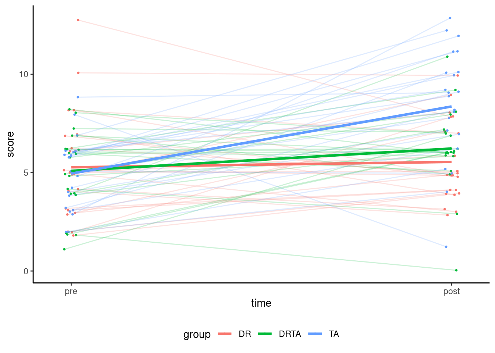
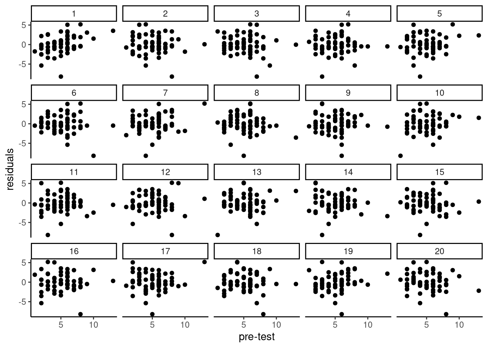

We consider data from Baumann et al. (1992), who conducted experiments on different teaching methods for reading. The authors randomized assignment to each of the three groups, but to account for potential differences in reading abilities, also administered tests before the experiment took place. Quoting Baumann et al. (1992)
To statistically account for students’ pre-experimental differences in comprehension monitoring abilities, two pretests were constructed, administered, and used as covariates in data analyses for Post-tests 1-3.
We consider post-test 2, consisting of comprehension monitoring questionnaire. A similar test was assigned prior to the experiment, with minor modifications
Three additional items were added to Pretest 2 and several others were revised so that there was better coverage and balance…
In this demonstration, we simply focus on posttest2 as a function of pretest2 and the group indicator.
Code
## Load packages and set global optionssuppressPackageStartupMessages(library(tidyverse))library(emmeans)options(contrasts =c("contr.sum", "contr.poly"))theme_set(theme_classic()) # set theme globally for ggplot## Load datadata(BSJ92, package ="hecedsm")# Check the dataglimpse(BSJ92)
# Check whether data are balancedxtabs(~group, data = BSJ92)
group
DR DRTA TA
22 22 22
Graphical representation
This section can be omitted upon first reading. We may want to compare the scores prior and post-intervention graphically to get a sense of the improvement for groups and check that the randomization was properly conducted. One way to look at the data is a longitudinal measurement (time ordered). Thus, we could draw line segments joining pre and post scores, with a different color for each group. To do this, we first combine the data in long format (one response per line) by making prior and posts into a single column labelled score. Then, we map the two categorical variables (time and group) to the \(x\)-axis and colour, respectively. Since the scores are discrete, points are jittered horizontally and vertically to avoid overlay.
Code
reading_long <- BSJ92 |># keep only useful columnsselect(group, posttest2, pretest2) |># add a new column with id for personrowid_to_column("id") |># rename responserename(post = posttest2, pre = pretest2) |># pivot data (response in score, columns to labels)pivot_longer(cols =c("pre","post"),values_to ="score",names_to ="time") |># Make new labels to factormutate(time =relevel(factor(time), ref ="pre"))# Spaghetti plotggplot(data = reading_long,mapping =aes(x = time,color = group,group = id,y = score)) +# Add point for observation with small jitteringgeom_point(size =0.5,position =position_jitter(width =0.02, height =0.25, seed =123)) +# The values were selected after trial and error# set seed so that ponts and segments are moved by same amount# Draw a line between pre and post scoresgeom_line(alpha =0.2,position =position_jitter(width =0.02, height =0.25, seed =123)) +# Add average per group (pre/post) and draw linesstat_summary(aes(group = group),fun ="mean",geom ="line",linewidth =1.2) +# Reduce space left-right of pre-postscale_x_discrete(expand =c(0, 0.1)) +theme(legend.position ="bottom")

The graphical display indicates a larger increase for the teaching aloud (TA) group, but the two other (directed reading and the hybrid method) seem on par. There is no discernible difference in strength between experimental condition prior to the experiment, but not the two strong grades in the DR group (who do worse).
Analysis of variance vs analysis of covariance
In this simple setting, we begin by comparing the drop in variability (leading to an increase in power) for the analysis of covariance. We thus set up a linear model with
\[\mathsf{E}(\texttt{post}_{ir}) = \mu + \alpha_i + \beta \texttt{pre}_{ir}\] with \(\mathsf{Va}(\texttt{post}_{ir})=\sigma^2\). We can view this model as a one-way analysis of variance for \(\texttt{post}_{ir} - \beta \texttt{pre}_{ir}\), with the difference that we estimate the coefficient \(\beta\) based on the data. Under our usual sum-to-zero constraint, \(\mu\) is the global average of the residual scores and \(\alpha_i\) is the difference between group \(i\) and this average, with the constraint \(\alpha_{\texttt{DR}} + \alpha_{\texttt{DRTA}} + \alpha_{\texttt{TA}}=0\).
Code
# Model the scores on tests 2model1 <-lm(posttest2 ~ group + pretest2, data = BSJ92)# Model assumes parallel slopes with equal differencesanova(model1)# Only look for the difference between groupsmodel2 <-lm(posttest2 ~ group, data = BSJ92)anova(model2)# Compare the mean squared residuals# and the p-value for group
As in many instances, there is strong correlation between prior and posterior scores and this helps reduce the leftover unexplained variability, thus increasing power to detect differences between groups. One may also consider directly modelling the improvement in scores, by setting posttest2 - pretest2 as response variable. While the interpretation would be clear, it is clear we can do better by including pretest2 as a covariate instead: the model for the difference in score is equivalent to fixing the parameter \(\beta\) associated to pretest2 to 1.
Analysis of variance tables for Model 1 (ANCOVA, left) and Model 2 (ANOVA, right).
term
df
sum of squares
F statistic
p-value
group
2
95.12
8.88
0.0004
pretest2
1
24.22
4.52
0.0375
Residuals
62
332.19
term
df
sum of squares
F statistic
p-value
group
2
95.12
8.41
6e-04
Residuals
63
356.41
We can compare the one-way ANOVA model (Model 1) with the analysis of covariance (Model 2). In the present context, either are valid but one measures the average, the other some form of improvement between two time periods. About one fifth of the explained variability is due to pretest. Here, the impact of group is significant and so the inclusion of a covariate made no difference as to the findings of a difference, but strengthened our conclusions.
Contrasts
The study focused on the comparison between the business-as-usual scenario (DA) and the average of the other two methods. They also compared the relative effectiveness of DA vs DRTA. We can compute marginal means and compute these contrasts as usual.
Because we assume the difference post vs pre is the same on average (the slope between groups is the same), the difference between group is the same regardless of the score on the pre-test. The marginal means are computed at the average of prettest2 score.
The two contrasts we have correspond to \(\mathscr{H}_{01}: \mu_{\texttt{DR}} = (\mu_{\texttt{DRTA}} + \mu_{\texttt{TA}})/2\) and \(\mathscr{H}_{02}: \mu_{\texttt{DRTA}} = \mu_{\texttt{TA}}\), which can be rewritten with weights \((2, -1, -1)\) and \((0, 1, -1)\) assuming that the groups are ordered in alphabetical order. The two contrasts are orthogonal so use disjoint bits of information thanks to the conditioning. We proceed below with Holm–Bonferroni’s correction (for two tests), but we would normally need to filter out these \(p\)-values and perform the corrections with all other tests. The effect size for the contrasts are obtained by dividing by the estimated variance for the residuals, \(\widehat{\sigma}^2\), which is smaller for the ANCOVA model since part of the variability is explained by students strength, captured through prettest2.
Code
# Marginal means and planned contrasts# Groups are in alphabetical order, so (DR, DRTA, TA)planned_contrasts <-list(c1 =c(2, -1, -1), #H0: DR = average(DRTA, TA)c2 =c(0, 1, -1)) #H0: DRTA = TAcontrasts1 <-contrast(emmeans(model1, specs ="group"),method = planned_contrasts,p.adjust ="holm")# Measure of effect sizecohens_d <- emmeans::eff_size(contrasts1,method ="identity",sigma =sigma(model1),edf =df.residual(model1))
Preplanned contrasts for Model 1 (ANCOVA, left) and Model 2 (ANOVA, right); c1 denotes the comparison between control (DR) and average of other methods, while c2 is the pairwise comparison between DRTA and TA.
contrast
estimate
se
df
t statistic
p-value
c1
-3.64
1.21
62
-3.01
0.0038
c2
-2.17
0.70
62
-3.11
0.0028
contrast
estimate
se
df
t statistic
p-value
c1
-3.50
1.24
63
-2.82
0.0065
c2
-2.14
0.72
63
-2.98
0.0041
The values for the contrasts show that \(p\)-values have been reduced by 30% to 40%, so while there are clear differences in treatment, it could help increase the power in more borderline cases. The estimated Cohen’s \(d\) measure for contrast 1 is -1.57 (95% CI: -2.65, -0.49) for Model 1 (ANCOVA), versus -1.47 (95% CI: -2.55, -0.4) for Model 2 (ANOVA). These confidence interval are unadjusted, but are narrower with the added covariate. The estimated effect size is large, and the upper bounds for the effect imply a medium-sized effect at the very least.
Testing model assumptions
Generally, there are three additional assumptions to consider in the analysis of covariance model.
whether the slopes in each experimental condition are the same or not.
whether the linear relationship between the covariate and the response holds.
whether the covariate is measured with error.
In principle, we could fit a different slope for the response variable in each group. However, if we do this, the difference between groups depends on the value of the covariate, which makes comparisons. If the slope is the same, all lines are parallel and the effect of the experimental factor is the same regardless of the other explanatory.
To assess the hypothesis of equal slope, we can fit a model with different slopes in each group (via an interaction between the experimental condition and the covariate) and assess the increase in goodness-of-fit with the model that has the same slope. Such models are nested and can be compared in terms of the increase in sum of square.
The other two additional assumptions are equally important, but harder to quantify. The linearity of the relationship can be verified graphically through residual plots (ordinary residuals vs fitted values), as before. If there is evidence of (local) structure, one may hope to pick it up. Measurement error depends on the context.
By design, observations are independent and the randomization was well performed; our quick graphical depiction of the data showed that there were no difference in mean apriori.
Linearity: effect of covariate is linear
The analysis of covariance is a linear model, so inherits a set of assumptions. The first assumption is linearity, which means here that the relationship between pre- and post-tests is well described by a straight line. We can produce a scatterplot of the data to check this, but usually one looks at the residuals from the model (the difference between the observation and its estimated average, or fitted value \(e_i=\texttt{posttest2}_i - \widehat{\texttt{posttest2}}_i\). These are uncorrelated with \(\texttt{pretest2}_i\), so the plot should show no pattern (trends, cycles, quadratic trend, etc.)
Scatterplot of pre and post intervention tests (left) and scatterplot of ordinary residuals against covariate pre-test2, with LOESS curve (right).
Code
# To save for a publication# ggsave("scatterplot.pdf", plot = g1, width = 5, height = 5)
Since the measurements are discrete and scarce, it is hard to see much but this assumption is reasonable. An added line (local fit, LOESS) is added to help detect departures from linearity but be careful not to over-interpret the graphs. Another way to see this is to create replicate data by permuting residuals (a form of graphical test); if we can easily detect the dataset from the list, then there may be residual structure (otherwise the patterns are due to sampling variability). For example, could you spot the true residuals from the 20 panels?

Panels with 20 replicate datasets obtained by permuting residuals. The true data is in position 16.
Linearity: are the slopes the same?
The second part of the linearity assumption lies in the assumption that the linear trend for pre-test and post-test is the same for each group. If they were different, we would have an interaction (between a categorical and a continuous variable). We can use the \(F\) test to compare the model with and without interaction
Code
model3 <-lm(posttest2 ~ group*pretest2, data = BSJ92)anova(model1, model3)
The \(p\)-value is 0.9, so there is no evidence that the slopes are not parallel.
Test for equality of variance
Another assumption of the linear model is that of constant variance. In analysis of variance models, we specify that each (sub)group has its own mean, but that the variance \(\sigma^2\) of the measurements is constant. This is useful because we can pool all observations to more reliably estimate it if the assumption holds true. If it isn’t true, what we obtain is some average of small and large variance, and this impacts our power (comparing groups with small variance).
If we move away from equal variance, what is the alternative? For one, we could simply estimate a different variance for each level of the experimental factors. For one-way designs, it’s pretty clear how this could be modelled, but there is more choice in complex factorial designs: should we have a different variance per row? or by column? or let each cell have its own variance? The more variance we estimate, the more we need to have observations per cell. Moving away from equal variance has also some consequences: when we talked about effect size, we looked at proportion of variance relative to the variance of the residual (which now depends on the group) or for Cohen’s \(d\) at standardized mean difference (which have no analog).
If we want to check that the variance are equal, we can use Levene’s test. There is a catch: normally, Levene’s test is just a one-way ANOVA where for (sub)group \(i\) and replication \(r\), we use as response the absolute value of the centered observations, \(|Y_{ir} - \widehat{\mu}_i|\), as input to the model. With continuous covariates included, an alternative is to instead perform a test but with the detrended values, or use the absolute value of the ordinary residuals \(|Y_{ir} - \widehat{Y}_{ir}|\).
Fitting a variance per group and doing a comparison between group mean is oftentimes referred to as Welch’s ANOVA. If we are only interested in the global null, the function oneway.test() does this assuming by default unequal variance. This only returns the \(F\) statistic for the global null hypothesis \(\mu_{\texttt{DR}} = \mu_{\texttt{DRTA}} = \mu_{\texttt{TA}}\).
Code
lm_detrend <-lm(posttest2 ~ pretest2, data = BSJ92)oneway.test(resid(lm_detrend)~ group, data = BSJ92)
Models with different variance per group
If we wanted to do pairwise comparisons or look at custom contrasts, we need rather a more explicit model in which the mean and variance differ by group, using the nlme package. The argument weights is used to specify the variance.
The syntax nlme::varIdent(form = ~ 1 | group) specifies that the variance is constant (~ 1) for observations within a group, but changes from one experimental group to the next.
The first benefit of this approach is that we get another test of equality of variance; this is a likelihood ratio test, where we are using the normality assumption to fit the model and make comparisons. Comparison of two nested models (think Russian dolls) that have the same specification for the mean can be done using the function anova.
Code
# compute likelihood ratio testanova(model_diffvar, model_samevar)
In large samples and under normality, the likelihood ratio statistic follows a \(\chi^2_{g-1}\) distribution, where \(g\) is the number of groups.1 From the table, we can extract the value of the test statistic (L.Ratio), which is 4.65. We compare this to the null \(\chi^2_2\) distribution, giving a tail probability of 0.098; there is weak evidence of heterogeneity.
The benefit of using this framework is that emmeans will recognize the unequal variance and use them accordingly for computing contrasts. The \(t\)-test values for the contrasts have non-integer degrees of freedom, since the null distribution is intractable; however, the Student-\(t\) distribution provides a reasonable approximation if we evaluate it at a particular value for the degrees of freedom, a method know as Satterthwaite’s approximation. See this mention in the output of the method.
Baumann, J. F., Seifert-Kessell, N., & Jones, L. A. (1992). Effect of think-aloud instruction on elementary students’ comprehension monitoring abilities. Journal of Reading Behavior, 24(2), 143–172. https://doi.org/10.1080/10862969209547770
Footnotes
This follows the general rule when comparing two nested models: the degrees of freedom are the difference between the number of parameters under the alternative (the more complicated model) and the null model (which we upon by setting restrictions on the alternative model).↩︎
Source Code
---title: "Analysis of covariance"type: docseditor_options: chunk_output_type: console---```{r slides-videos, echo=FALSE, include=FALSE}source(here::here("R", "youtube-playlist.R"))playlist_id <-"PLUB8VZzxA8IvjcV7Yl-OW_9KI6f_2K5HY"slide_details <- tibble::tribble(~title, ~youtube_id,"Introduction", "SHhP_TfZGVM","Interaction plots", "I63CNxonlow","Marginal contrast and simple effects", "KLLBNQhD0rE","More contrasts and interactions", "WIoxZZ4pvlE")options(knitr.kable.NA ='')```<!--# Videos```{r show-youtube-list, echo=FALSE, results="asis"}youtube_list(slide_details, playlist_id, example = TRUE)```-->The **R** code [can be downloaded here](/example/ancova-video.R) and the [SPSS script here](/example/ancova.sps).# NotebookWe consider data from @Baumann:1992, who conducted experiments on different teaching methods for reading. The authors randomized assignment to each of the three groups, but to account for potential differences in reading abilities, also administered tests before the experiment took place. Quoting @Baumann:1992> To statistically account for students' pre-experimental differences in comprehension monitoring abilities, two pretests were constructed, administered, and used as covariates in data analyses for Post-tests 1-3.We consider post-test 2, consisting of comprehension monitoring questionnaire. A similar test was assigned prior to the experiment, with minor modifications > Three additional items were added to Pretest 2 and several others were revised so that there was better coverage and balance...In this demonstration, we simply focus on `posttest2` as a function of `pretest2` and the `group` indicator.```{r loadpackages, eval = TRUE, echo = TRUE}## Load packages and set global optionssuppressPackageStartupMessages(library(tidyverse))library(emmeans)options(contrasts =c("contr.sum", "contr.poly"))theme_set(theme_classic()) # set theme globally for ggplot## Load datadata(BSJ92, package ="hecedsm")# Check the dataglimpse(BSJ92)# Check whether data are balancedxtabs(~group, data = BSJ92)```## Graphical representationThis section can be omitted upon first reading. We may want to compare the scores prior and post-intervention graphically to get a sense of the improvement for groups and check that the randomization was properly conducted. One way to look at the data is a longitudinal measurement (time ordered). Thus, we could draw line segments joining `pre` and `post` scores, with a different color for each group. To do this, we first combine the data in long format (one response per line) by making `prior` and `posts` into a single column labelled `score`. Then, we map the two categorical variables (`time` and `group`) to the $x$-axis and colour, respectively. Since the scores are discrete, points are jittered horizontally and vertically to avoid overlay. ```{r scatterplot, echo = TRUE, eval = TRUE}reading_long <- BSJ92 |># keep only useful columnsselect(group, posttest2, pretest2) |># add a new column with id for personrowid_to_column("id") |># rename responserename(post = posttest2, pre = pretest2) |># pivot data (response in score, columns to labels)pivot_longer(cols =c("pre","post"),values_to ="score",names_to ="time") |># Make new labels to factormutate(time =relevel(factor(time), ref ="pre"))# Spaghetti plotggplot(data = reading_long,mapping =aes(x = time,color = group,group = id,y = score)) +# Add point for observation with small jitteringgeom_point(size =0.5,position =position_jitter(width =0.02, height =0.25, seed =123)) +# The values were selected after trial and error# set seed so that ponts and segments are moved by same amount# Draw a line between pre and post scoresgeom_line(alpha =0.2,position =position_jitter(width =0.02, height =0.25, seed =123)) +# Add average per group (pre/post) and draw linesstat_summary(aes(group = group),fun ="mean",geom ="line",linewidth =1.2) +# Reduce space left-right of pre-postscale_x_discrete(expand =c(0, 0.1)) +theme(legend.position ="bottom")```The graphical display indicates a larger increase for the teaching aloud (`TA`) group, but the two other (directed reading and the hybrid method) seem on par. There is no discernible difference in strength between experimental condition prior to the experiment, but not the two strong grades in the DR group (who do worse).## Analysis of variance vs analysis of covarianceIn this simple setting, we begin by comparing the drop in variability (leading to an increase in power) for the analysis of covariance. We thus set up a linear model with$$\mathsf{E}(\texttt{post}_{ir}) = \mu + \alpha_i + \beta \texttt{pre}_{ir}$$with $\mathsf{Va}(\texttt{post}_{ir})=\sigma^2$. We can view this model as a one-way analysis of variance for $\texttt{post}_{ir} - \beta \texttt{pre}_{ir}$, with the difference that we estimate the coefficient $\beta$ based on the data. Under our usual sum-to-zero constraint, $\mu$ is the global average of the residual scores and $\alpha_i$ is the difference between group $i$ and this average, with the constraint $\alpha_{\texttt{DR}} + \alpha_{\texttt{DRTA}} + \alpha_{\texttt{TA}}=0$.```{r fitmodels, eval = FALSE, echo = TRUE}# Model the scores on tests 2model1 <-lm(posttest2 ~ group + pretest2, data = BSJ92)# Model assumes parallel slopes with equal differencesanova(model1)# Only look for the difference between groupsmodel2 <-lm(posttest2 ~ group, data = BSJ92)anova(model2)# Compare the mean squared residuals# and the p-value for group```As in many instances, there is strong correlation between prior and posterior scores and this helps reduce the leftover unexplained variability, thus increasing power to detect differences between groups.One may also consider directly modelling the improvement in scores, by setting `posttest2 - pretest2` as response variable. While the interpretation would be clear, it is clear we can do better by including`pretest2` as a covariate instead: the model for the difference in score is equivalent to fixing the parameter $\beta$ associated to `pretest2` to 1.```{r fitmodels2, eval = TRUE, echo = FALSE}# Model the scores on tests 2model1 <-lm(posttest2 ~ group + pretest2, data = BSJ92)# Model assumes parallel slopes with equal differences# Only look for the difference between groupsmodel2 <-lm(posttest2 ~ group, data = BSJ92)kable1 <- knitr::kable(broom::tidy(anova(model1))[,-4],col.names =c("term","df","sum of squares","F statistic","p-value"), digits =c(0,0,2,2,4))kable2 <- knitr::kable(broom::tidy(anova(model2))[,-4],col.names =c("term","df","sum of squares","F statistic","p-value"), digits =c(0,0,2,2,4))knitr::kables(x =list("Model 1"= kable1, "Model 2"= kable2),caption ="Analysis of variance tables for Model 1 (ANCOVA, left) and Model 2 (ANOVA, right).")```We can compare the one-way ANOVA model (Model 1) with the analysis of covariance (Model 2). In the present context, either are valid but one measures the average, the other some form of improvement between two time periods. About one fifth of the explained variability is due to pretest. Here, the impact of group is significant and so the inclusion of a covariate made no difference as to the findings of a difference, but strengthened our conclusions. ## Contrasts The study focused on the comparison between the business-as-usual scenario (`DA`) and the average of the other two methods. They also compared the relative effectiveness of `DA` vs `DRTA`. We can compute marginal means and compute these contrasts as usual.Because we assume the difference post vs pre is the same on average (the slope between groups is the same), the difference between group is the same regardless of the score on the pre-test. The marginal means are computed at the average of `prettest2` score. The two contrasts we have correspond to $\mathscr{H}_{01}: \mu_{\texttt{DR}} = (\mu_{\texttt{DRTA}} + \mu_{\texttt{TA}})/2$ and $\mathscr{H}_{02}: \mu_{\texttt{DRTA}} = \mu_{\texttt{TA}}$, which can be rewritten with weights $(2, -1, -1)$ and $(0, 1, -1)$ assuming that the groups are ordered in alphabetical order. The two contrasts are orthogonal so use disjoint bits of information thanks to the conditioning. We proceed below with Holm--Bonferroni's correction (for two tests), but we would normally need to filter out these $p$-values and perform the corrections with all other tests.The effect size for the contrasts are obtained by dividing by the estimated variance for the residuals, $\widehat{\sigma}^2$, which is smaller for the ANCOVA model since part of the variability is explained by students strength, captured through `prettest2`.```{r contrasts, echo = TRUE, eval = TRUE}# Marginal means and planned contrasts# Groups are in alphabetical order, so (DR, DRTA, TA)planned_contrasts <-list(c1 =c(2, -1, -1), #H0: DR = average(DRTA, TA)c2 =c(0, 1, -1)) #H0: DRTA = TAcontrasts1 <-contrast(emmeans(model1, specs ="group"),method = planned_contrasts,p.adjust ="holm")# Measure of effect sizecohens_d <- emmeans::eff_size(contrasts1,method ="identity",sigma =sigma(model1),edf =df.residual(model1))``````{r tables2, echo = FALSE, eval = TRUE}contrasts2 <-contrast(emmeans(model2, specs ="group"),method = planned_contrasts,p.adjust ="holm")# Measure of effect sizecohen_d2 <- emmeans::eff_size(contrasts2,method ="identity",sigma =sigma(model2),edf =df.residual(model2))kable3 <- knitr::kable(broom::tidy(contrasts1)[,-c(1,3)],col.names =c("contrast","estimate","se","df","t statistic","p-value"), digits =c(0,2,2,0, 2,4))kable4 <- knitr::kable(broom::tidy(contrasts2)[,-c(1,3)],col.names =c("contrast","estimate","se","df","t statistic","p-value"), digits =c(0,2,2,0, 2,4))knitr::kables(x =list("Model 1"= kable3, "Model 2"= kable4),caption ="Preplanned contrasts for Model 1 (ANCOVA, left) and Model 2 (ANOVA, right); `c1` denotes the comparison between control (`DR`) and average of other methods, while `c2` is the pairwise comparison between `DRTA` and `TA`.")# Because lines are parallel, the difference between group# is the same regardless of the score on the pre-test# The two contrasts are orthogonal so# use disjoint bits of information thanks to the conditioning# Cohen's d for the ANCOVAcohens_d2 <- emmeans::eff_size(contrast(emmeans(model2, specs ="group"),method = planned_contrasts),method ="identity",sigma =sigma(model2),edf =df.residual(model2))```The values for the contrasts show that $p$-values have been reduced by 30% to 40%, so while there are clear differences in treatment, it could help increase the power in more borderline cases. The estimated Cohen's $d$ measure for contrast 1 is `r round(summary(cohens_d)$effect[1], 2)` (95% CI: `r round(summary(cohens_d)$lower.CL[1], 2)`, `r round(summary(cohens_d)$upper.CL[1], 2)`) for Model 1 (ANCOVA), versus `r round(summary(cohens_d2)$effect[1], 2)` (95% CI: `r round(summary(cohens_d2)$lower.CL[1], 2)`, `r round(summary(cohens_d2)$upper.CL[1], 2)`) for Model 2 (ANOVA). These confidence interval are unadjusted, but are narrower with the added covariate. The estimated effect size is large, and the upper bounds for the effect imply a medium-sized effect at the very least.## Testing model assumptionsGenerally, there are three additional assumptions to consider in the analysis of covariance model.1. whether the slopes in each experimental condition are the same or not.2. whether the linear relationship between the covariate and the response holds.3. whether the covariate is measured with error.In principle, we could fit a different slope for the response variable in each group. However, if we do this, the difference between groups depends on the value of the covariate, which makes comparisons. If the slope is the same, all lines are parallel and the effect of the experimental factor is the same regardless of the other explanatory.To assess the hypothesis of equal slope, we can fit a model with different slopes in each group (via an interaction between the experimental condition and the covariate) and assess the increase in goodness-of-fit with the model that has the same slope. Such models are nested and can be compared in terms of the increase in sum of square.The other two additional assumptions are equally important, but harder to quantify. The linearity of the relationship can be verified graphically through residual plots (ordinary residuals vs fitted values), as before. If there is evidence of (local) structure, one may hope to pick it up. Measurement error depends on the context.By design, observations are independent and the randomization was well performed; our quick graphical depiction of the data showed that there were no difference in mean apriori.### Linearity: effect of covariate is linearThe analysis of covariance is a linear model, so inherits a set of assumptions. The first assumption is linearity, which means here that the relationship between pre- and post-tests is well described by a straight line. We can produce a scatterplot of the data to check this, but usually one looks at the residuals from the model (the difference between the observation and its estimated average, or fitted value $e_i=\texttt{posttest2}_i - \widehat{\texttt{posttest2}}_i$. These are uncorrelated with $\texttt{pretest2}_i$, so the plot should show no pattern (trends, cycles, quadratic trend, etc.) ```{r anovamodelslin, echo = TRUE, eval = TRUE, fig.cap = "Scatterplot of pre and post intervention tests (left) and scatterplot of ordinary residuals against covariate pre-test2, with LOESS curve (right).", message = FALSE}library(patchwork) # combine plotsg1 <-ggplot(data = BSJ92, mapping =aes(x = pretest2, y = posttest2)) +geom_point(position =position_jitter(width =0.1, height =0.1, seed =80667)) +geom_smooth(method ="lm", se =FALSE)reading_aug <- BSJ92 |>mutate(.resid =resid(model1), # observation minus fitted.rstudent =rstudent(model1), # studentized resid. (equal variance).fitted =fitted(model1)) # fitted values yhatg2 <-ggplot(data = reading_aug,aes(x = pretest2,y = .resid)) +geom_point() +geom_smooth() +# Fit local trend to detect patternslabs(x ='ordinary residuals')g1 + g2# To save for a publication# ggsave("scatterplot.pdf", plot = g1, width = 5, height = 5)```Since the measurements are discrete and scarce, it is hard to see much but this assumption is reasonable. An added line (local fit, LOESS) is added to help detect departures from linearity but be careful not to over-interpret the graphs. Another way to see this is to create replicate data by permuting residuals (a form of graphical test); if we can easily detect the dataset from the list, then there may be residual structure (otherwise the patterns are due to sampling variability). For example, could you spot the true residuals from the 20 panels?```{r nullabor, echo = FALSE, eval = TRUE, fig.cap = "Panels with 20 replicate datasets obtained by permuting residuals. The true data is in position 16.", cache = TRUE}library(nullabor)set.seed(1324)ggplot(lineup(null_lm(posttest2 ~ group + pretest2, method ='boot'), reading_aug, pos =16)) +geom_point(aes(x = pretest2, y = .resid)) +facet_wrap(~ .sample) +labs(x ="pre-test", y ="residuals")```### Linearity: are the slopes the same?The second part of the linearity assumption lies in the assumption that the linear trend for pre-test and post-test is the same for each group. If they were different, we would have an interaction (between a categorical and a continuous variable). We can use the $F$ test to compare the model with and without interaction ```{r eval = FALSE, echo = TRUE}model3 <-lm(posttest2 ~ group*pretest2, data = BSJ92)anova(model1, model3)```The $p$-value is `r round(anova(model1, lm(posttest2 ~ group*pretest2, data = BSJ92))[2,6],2)`, so there is no evidence that the slopes are not parallel.### Test for equality of varianceAnother assumption of the linear model is that of constant variance. In analysis of variance models, we specify that each (sub)group has its own mean, but that the variance $\sigma^2$ of the measurements is constant. This is useful because we can pool all observations to more reliably estimate it if the assumption holds true. If it isn't true, what we obtain is some average of small and large variance, and this impacts our power (comparing groups with small variance).If we move away from equal variance, what is the alternative? For one, we could simply estimate a different variance for each level of the experimental factors. For one-way designs, it's pretty clear how this could be modelled, but there is more choice in complex factorial designs: should we have a different variance per row? or by column? or let each cell have its own variance? The more variance we estimate, the more we need to have observations per cell. Moving away from equal variance has also some consequences: when we talked about effect size, we looked at proportion of variance relative to the variance of the residual (which now depends on the group) or for Cohen's $d$ at standardized mean difference (which have no analog).If we want to check that the variance are equal, we can use Levene's test. There is a catch: normally, Levene's test is just a one-way ANOVA where for (sub)group $i$ and replication $r$, we use as response the absolute value of the centered observations, $|Y_{ir} - \widehat{\mu}_i|$, as input to the model. With continuous covariates included, an alternative is to instead perform a test but with the detrended values, or use the absolute value of the ordinary residuals $|Y_{ir} - \widehat{Y}_{ir}|$.```{r leveneTest, eval = FALSE, echo = TRUE}car::leveneTest(resid(model1) ~ group,data = BSJ92,center = mean)``````{r leveneTestkable, echo = FALSE, eval = TRUE}knitr::kable(car::leveneTest(resid(model1) ~ group,data = BSJ92,center = mean), col.names =c("df","statistic", "p-value"), digits =c(0,2,2))```Fitting a variance per group and doing a comparison between group mean is oftentimes referred to as Welch's ANOVA. If we are only interested in the global null, the function `oneway.test()` does this assuming by default unequal variance. This only returns the $F$ statistic for the global null hypothesis $\mu_{\texttt{DR}} = \mu_{\texttt{DRTA}} = \mu_{\texttt{TA}}$.```{r WelchANOVA, echo = TRUE, eval = FALSE}lm_detrend <-lm(posttest2 ~ pretest2, data = BSJ92)oneway.test(resid(lm_detrend)~ group, data = BSJ92)```## Models with different variance per groupIf we wanted to do pairwise comparisons or look at custom contrasts, we need rather a more explicit model in which the mean and variance differ by group, using the `nlme` package. The argument `weights` is used to specify the variance.```{r gls, echo = TRUE, eval = TRUE}model_samevar <- nlme::gls(posttest2 ~ group + pretest2,data = BSJ92)model_diffvar <- nlme::gls(posttest2 ~ group + pretest2,data = BSJ92,weights = nlme::varIdent(form =~1| group))```The syntax `nlme::varIdent(form = ~ 1 | group)` specifies that the variance is constant (`~ 1`) for observations within a group, but changes from one experimental `group` to the next.The first benefit of this approach is that we get another test of equality of variance; this is a likelihood ratio test, where we are using the normality assumption to fit the model and make comparisons. Comparison of two nested models (think Russian dolls) that have the same specification for the mean can be done using the function `anova`.```{r anovanested, echo = TRUE, eval = FALSE}# compute likelihood ratio testanova(model_diffvar, model_samevar)```In large samples and under normality, the likelihood ratio statistic follows a $\chi^2_{g-1}$ distribution, where $g$ is the number of groups.^[This follows the general rule when comparing two nested models: the degrees of freedom are the difference between the number of parameters under the alternative (the more complicated model) and the null model (which we upon by setting restrictions on the alternative model).] From the table, we can extract the value of the test statistic (`L.Ratio`), which is `r round(anova(model_diffvar, model_samevar)[2,8],2)`. We compare this to the null $\chi^2_2$ distribution, giving a tail probability of `r round(anova(model_diffvar, model_samevar)[2,9],3)`; there is weak evidence of heterogeneity. The benefit of using this framework is that `emmeans` will recognize the unequal variance and use them accordingly for computing contrasts. The $t$-test values for the contrasts have non-integer degrees of freedom, since the null distribution is intractable; however, the Student-$t$ distribution provides a reasonable approximation if we evaluate it at a particular value for the degrees of freedom, a method know as Satterthwaite's approximation. See this mention in the output of the method.```{r contrasts2, echo = TRUE, eval = TRUE}contrast(emmeans(model_diffvar, specs ="group"),method = planned_contrasts,p.adjust ="holm")```